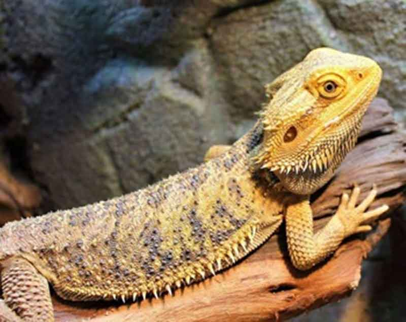

고양이가 좋아하는 소리! 집사님들 주목!
반려묘를 키우는 집사님이라면 우리 집 냥이가 무엇을 좋아하고, 어떤 것을 싫어하는지 참 궁금한 게 많을 거에요. 특히 독립성이 강한 고양이를 키울 때면 집사를 키우는 것인지 서로 독립적인 생활을 하는 것인지 헷갈릴 때가 많죠. 조금이라도 관심을 얻어보려고 다양한 장난감으로 유혹해 보지만, 그것도 한때! 그래서 소리를 이용해서 냥이의 관심을 가져볼 수 있어요. 고양이가 좋아하는 소리! 집사님들 주목하셔야 할 거예요.
1. 스크래쳐를 떠올려 보세요! 긁는 소리를 좋아해요.
고양이를 키우는 집사라면 집안에 스크래쳐 하나쯤은 다 있을 텐데요. 고양이가 스크래처를 좋아하는 건 '긁는 소리'를 좋아하기 때문이에요. 긁는 소리를 좋아하는 건 사냥을 하던 본능에 따른 것이라고 하는 데요. 사냥감이 땅을 파거나 사각사각 풀숲을 움직일 때 나는 소리와 비슷해서라고 합니다. 따라서 "나비야~"라고 불러도 오지 않던 고양이가 긁는 소리를 듣는다면 빠르게 달려오는 걸 볼 수 있을 거예요.
2. 분수형 급수기를 좋아하는 이유! 물 흐르는 소리를 좋아해요.
고인 물보다는 흐르는 물을 선호하는 고양이. 그래서 많은 집사가 분수 타입의 자동 급수기를 찾는 이유죠. 물그릇에 담긴 물보다는 '쪼르륵' 흐르는 물을 선호한답니다. 주방이나 화장실에 물 흐르는 소리를 틀어 놓는다면 어느새 주변에 앉아 있는 냥이를 발견할 수 있어요!
3. 비닐, 상자를 좋아하는 냥이! 바스락 소리를 좋아해요.
무엇인가 담을 비닐, 쇼핑백 안에 들어간 고양이를 종종 볼 수 있어요. 고양이는 바스락거리는 소리를 선호한답니다. '바스락 소리는 고양이의 사냥 본능과도 연결되어 있어요. 고양이가 사냥하는 동물과 비슷한 소리를 낸다고 생각하거든요. 그래서 비닐, 상자 등 바스락 소리로 자극한다면 눈을 치켜세우고 응시하는 고양이를 볼 수 있어요.
4. 사랑이 담긴 집사의 목소리! 냥이의 '최애' 소리입니다.
뭐니 뭐니해도 사랑과 애정이 담긴 집사의 목소리만큼 좋아하는 목소리는 없겠죠? 이제 막 처음 만난 집사라면 어렵겠지만, 어느 정도 유대감이 잘 형성된 사이라면 그 어떤 소리보다도 고양이의 귓가를 자극하는 소리가 될 거에요. 그래서 장난감을 들고 놀자는 소리, 밥 주는 소리, 그저 이름을 부르는 소리만으로도 반응하죠. 단, 너무 높은음의 자극적인 소리는 고양이와 친해지기 어려울 수 있으므로 다정하고 부드러운 소리로 불러보시길 바랄게요.
사랑스러운 우리 집 고양이! 항상 불러도 오지 않고, 자기 마음대로 행동하는 모습 때문에 섭섭한 마음이 들었다면 고양이가 좋아하는 소리로 불러보는 건 어떨까요? 호기심을 자극해 스트레스도 풀고 집사와의 따뜻한 정을 쌓는 계기가 될 수 있을 거예요.
[출처] 고양이가 좋아하는 소리! 집사님들 주목! ｜ 작성자 꼬미꼬미